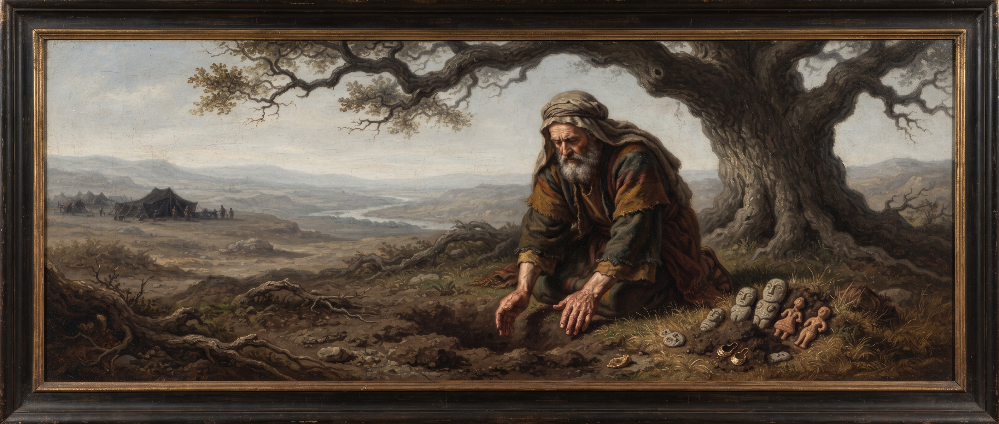
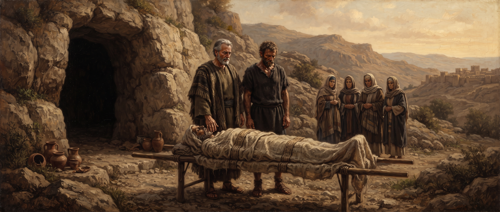

Genesis
Chapter Thirty-Five
King James Version
And God said unto Jacob, Arise, go up to Bethel, and dwell there: and make there an altar unto God, that appeared unto thee when thou fleddest from the face of Esau thy brother. 2Then Jacob said unto his household, and to all that were with him, Put away the strange gods that are among you, and be clean, and change your garments: 3And let us arise, and go up to Bethel; and I will make there an altar unto God, who answered me in the day of my distress, and was with me in the way which I went. 4And they gave unto Jacob all the strange gods which were in their hand, and all their earrings which were in their ears; and Jacob hid them under the oak which was by Shechem.
5And they journeyed: and the terror of God was upon the cities that were round about them, and they did not pursue after the sons of Jacob. 6So Jacob came to Luz, which is in the land of Canaan, that is, Bethel, he and all the people that were with him. 7And he built there an altar, and called the place Elbethel: because there God appeared unto him, when he fled from the face of his brother. 8But Deborah Rebekah's nurse died, and she was buried beneath Bethel under an oak: and the name of it was called Allonbachuth.
9And God appeared unto Jacob again, when he came out of Padanaram, and blessed him. 10And God said unto him, Thy name is Jacob: thy name shall not be called any more Jacob, but Israel shall be thy name: and he called his name Israel. 11And God said unto him, I am God Almighty: be fruitful and multiply; a nation and a company of nations shall be of thee, and kings shall come out of thy loins; 12And the land which I gave Abraham and Isaac, to thee I will give it, and to thy seed after thee will I give the land. 13And God went up from him in the place where he talked with him. 14And Jacob set up a pillar in the place where he talked with him, even a pillar of stone: and he poured a drink offering thereon, and he poured oil thereon. 15And Jacob called the name of the place where God spake with him, Bethel.
16And they journeyed from Bethel; and there was but a little way to come to Ephrath: and Rachel travailed, and she had hard labour. 17And it came to pass, when she was in hard labour, that the midwife said unto her, Fear not; thou shalt have this son also. 18And it came to pass, as her soul was in departing, (for she died) that she called his name Benoni: but his father called him Benjamin. 19And Rachel died, and was buried in the way to Ephrath, which is Bethlehem. 20And Jacob set a pillar upon her grave: that is the pillar of Rachel's grave unto this day.
21And Israel journeyed, and spread his tent beyond the tower of Edar. 22And it came to pass, when Israel dwelt in that land, that Reuben went and lay with Bilhah his father's concubine: and Israel heard it. Now the sons of Jacob were twelve:
23The sons of Leah; Reuben, Jacob's firstborn, and Simeon, and Levi, and Judah, and Issachar, and Zebulun: 24The sons of Rachel; Joseph, and Benjamin: 25And the sons of Bilhah, Rachel's handmaid; Dan, and Naphtali: 26And the sons of Zilpah, Leah's handmaid; Gad, and Asher: these are the sons of Jacob, which were born to him in Padanaram.
27And Jacob came unto Isaac his father unto Mamre, unto the city of Arbah, which is Hebron, where Abraham and Isaac sojourned. 28And the days of Isaac were an hundred and fourscore years. 29And Isaac gave up the ghost, and died, and was gathered unto his people, being old and full of days: and his sons Esau and Jacob buried him.

9And God appeared unto Jacob again, when he came out of Padanaram, and blessed him. 10And God said unto him, Thy name is Jacob: thy name shall not be called any more Jacob, but Israel shall be thy name: and he called his name Israel. 11And God said unto him, I am God Almighty: be fruitful and multiply; a nation and a company of nations shall be of thee, and kings shall come out of thy loins; 12And the land which I gave Abraham and Isaac, to thee I will give it, and to thy seed after thee will I give the land. 13And God went up from him in the place where he talked with him. 14And Jacob set up a pillar in the place where he talked with him, even a pillar of stone: and he poured a drink offering thereon, and he poured oil thereon. 15And Jacob called the name of the place where God spake with him, Bethel.
16And they journeyed from Bethel; and there was but a little way to come to Ephrath: and Rachel travailed, and she had hard labour. 17And it came to pass, when she was in hard labour, that the midwife said unto her, Fear not; thou shalt have this son also. 18And it came to pass, as her soul was in departing, (for she died) that she called his name Benoni: but his father called him Benjamin. 19And Rachel died, and was buried in the way to Ephrath, which is Bethlehem. 20And Jacob set a pillar upon her grave: that is the pillar of Rachel's grave unto this day.
21And Israel journeyed, and spread his tent beyond the tower of Edar. 22And it came to pass, when Israel dwelt in that land, that Reuben went and lay with Bilhah his father's concubine: and Israel heard it. Now the sons of Jacob were twelve:
23The sons of Leah; Reuben, Jacob's firstborn, and Simeon, and Levi, and Judah, and Issachar, and Zebulun: 24The sons of Rachel; Joseph, and Benjamin: 25And the sons of Bilhah, Rachel's handmaid; Dan, and Naphtali: 26And the sons of Zilpah, Leah's handmaid; Gad, and Asher: these are the sons of Jacob, which were born to him in Padanaram.
27And Jacob came unto Isaac his father unto Mamre, unto the city of Arbah, which is Hebron, where Abraham and Isaac sojourned. 28And the days of Isaac were an hundred and fourscore years. 29And Isaac gave up the ghost, and died, and was gathered unto his people, being old and full of days: and his sons Esau and Jacob buried him.

Study: Losses at the End of a Long Road
This chapter opens with a loose end from many chapters back finally getting tied off. Jacob commands his entire household to surrender their foreign gods before returning to Bethel — and given that Rachel stole her father's household idols back in chapter 31, this is very likely the moment those very images finally leave the family for good, buried quietly under an oak and never mentioned again.
At Bethel, God appears to Jacob a second time and repeats the name given to him at Peniel — Israel — along with the full covenant blessing first given to Abraham. It's a formal confirmation of everything chapter 32 already set in motion, spoken now in the same place where his whole journey away from home began twenty years earlier.
What follows is one loss after another, without much space between them. Deborah, Rebekah's old nurse, dies and is buried under her own named oak — a small, easy-to-miss detail that quietly confirms Rebekah herself is likely gone by this point too, since her death is never actually recorded anywhere in Genesis. Then, only a little further down the road, Rachel goes into hard labor and doesn't survive it.
Her last act, with her dying breath, is to name her newborn son Benoni — "son of my sorrow." Jacob renames him immediately: Benjamin, "son of my right hand." He doesn't erase what she called him so much as choose to carry the same child forward under a different name, sorrow answered with something closer to strength. She's buried on the road itself, and the pillar Jacob raises over her grave is still standing, the text says, "unto this day."
Reuben's sin gets only a single verse — lying with his father's concubine Bilhah — and the text doesn't dwell on it in the moment. But it isn't forgotten. Jacob brings it up again on his deathbed, years later, and one reading connects that verdict directly back to this quiet, easily overlooked sentence here.
“
“Didn't Jacob say so in Genesis 49? 'Reuben, thou art the first of my strength; but like water, you went up on my couch and defiled my couch,' and lived with his father's concubine.”
— William Branham, “Revelation, Chapter Four, Part III” (61-0108)
As the firstborn, Reuben stood to inherit the largest share and the family's leadership. This one act, recorded here in a single sentence, is the reason that inheritance eventually passes to someone else entirely.
The chapter closes the way chapter 25 opened this whole generation — two brothers, estranged for most of their lives, standing together one final time to bury their father. Isaac lives to a hundred and eighty, the longest recorded lifespan of any patriarch in this family, and Esau and Jacob bury him side by side without a word of conflict recorded between them.
One reading ties Isaac's burial into the same pattern already traced back at Sarah's death in chapter 23 — a family insisting, generation after generation, on being laid to rest in this one specific stretch of ground.
“
“Along come Abraham, and when Sarah died, Abraham specified a place and bought a parcel of ground... Then when Abraham died, he was buried with Sarah. Abraham begot Isaac. When Isaac died, he was buried with Abraham... They knew that at the resurrection, the firstfruits of the resurrection, that Jesus was coming.”
— William Branham, “An Exodus” (56-0615)
Whatever a reader makes of that reasoning, the pattern in the text itself keeps holding: three generations now laid to rest in the same small plot of land Abraham once insisted on buying outright rather than accepting as a gift. An entire generation of this family's story closes here — Rebekah gone, Deborah gone, Rachel gone, and now Isaac too — leaving Jacob, newly renamed Israel, as the last of that founding generation still standing.